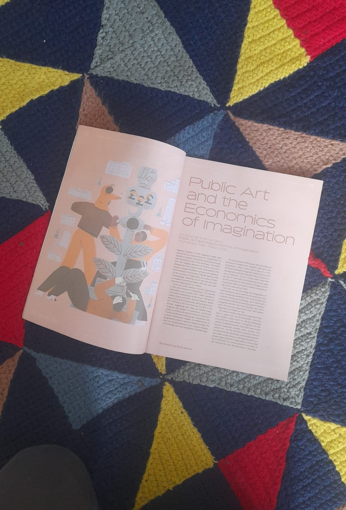
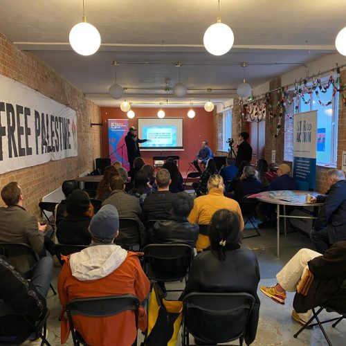
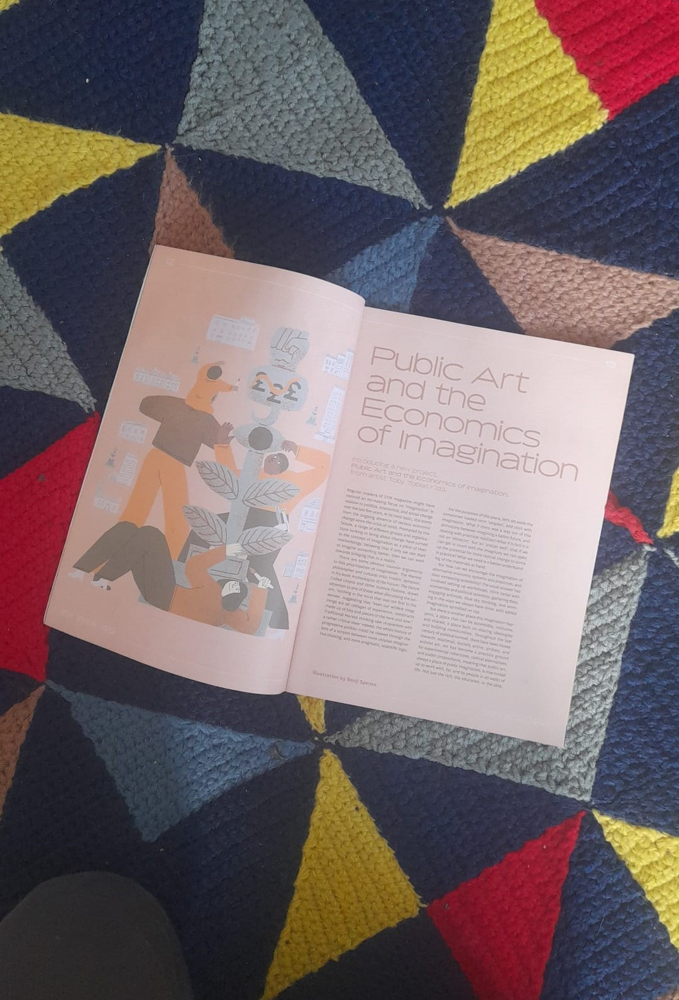
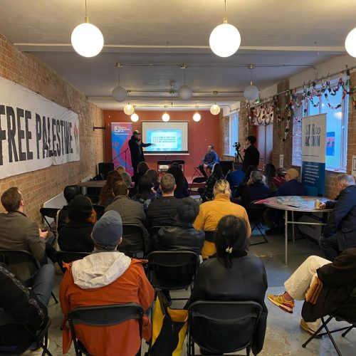

Art Activa
2024 – ongoing
 



Image 1: Institutional Mapping with Marley Trealor and PhD researchers at Coventry University, 2025
Image 2: Stir To Action Magazine, 2024
Image 3: With Future Narratives Lab at Pelican House, 2024
Art Activa is an artist-led platform initiated by Toby Tobias Kidd that explores the relationship between art, public space, and economic imagination. Bringing together practitioners from art, architecture, education, philosophy, activism, and the music industry, the project investigates how artistic practice can contribute to fairer and more transparent cultural economies.
Key outputs include the podcast Public Art & The Economics of Imagination, produced in collaboration with King's College London Centre for Philosophy & Art, alongside workshops, public events, publications, and research activity. Projects have been developed with partners including Coventry University Centre for Postdigital Culture, London School of Architecture, Art School Plus, and Future Narratives Lab, including a published workshop report examining social art practice within cultural organisations.